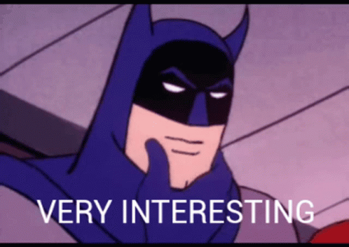

Tar Gergő
Mi az élet célom?
- Szeretnék minimum egy videó játékot fejleszteni.
- Családot alapítani.
- Addig élni ,amíg egy idegen fajjal nem tálálkozunk.
- Egyszer az ürbe lenni
Mit tanultam eddig és mit szeretnék még?
- Auto kereket cserélni.
- Meg tudom találni gyorsan a közös érdeklödéseket.
- Meg szeretnék tanulni jól programozni.
Kedvenc tevékenységeim
- Játszani videó játékokkal
- Tudományos videó-kat nézni

